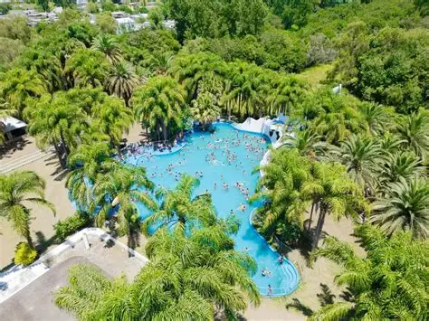
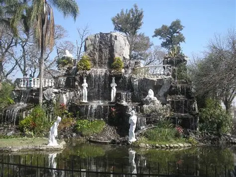
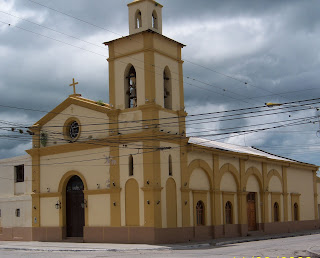
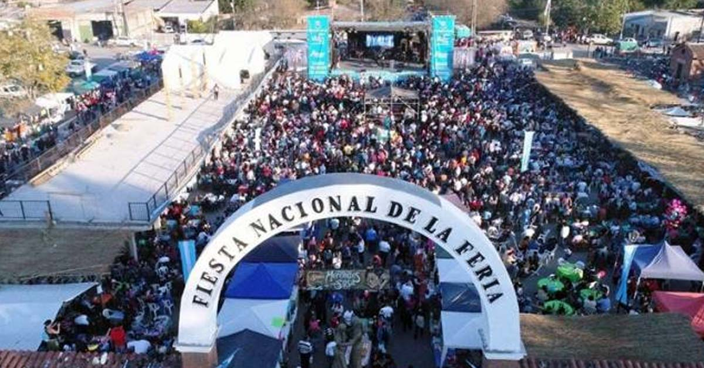
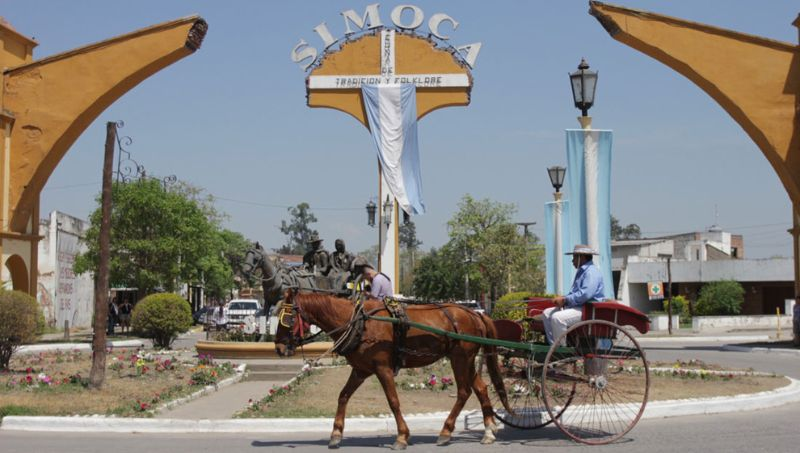
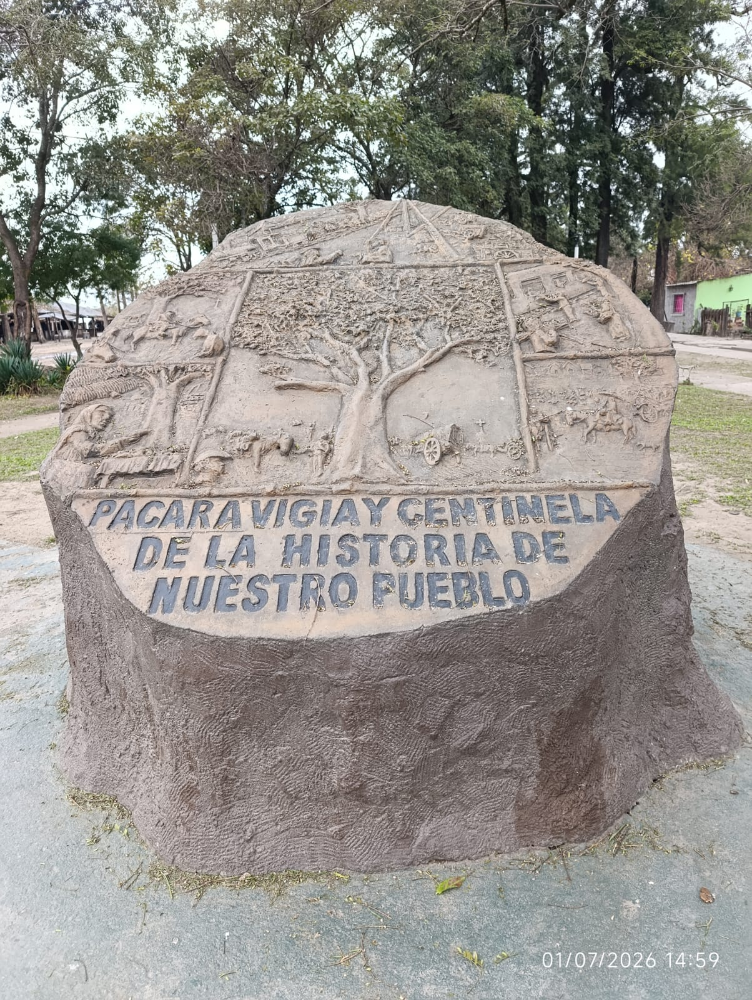

Balneario "El Lago del Paraíso"

Un espacio recreativo pensado para disfrutar en familia y en contacto con la naturaleza durante todo el año.
Servicios
- 🏊 Pileta
- 🔥 Asadores
- ⚽ Canchas deportivas
- 📶 Wi-Fi gratuito
- 🚿 Vestuarios
- 🎟 Entrada libre
Plaza
Bartolomé Mitre

El corazón de Simoca. Un espacio ideal para caminar, descansar y disfrutar del entorno histórico de la ciudad.
Qué encontrarás
- 🌳 Espacios verdes
- 🪑 Bancos para descansar
- 📸 Excelente para fotografías
- 🎉 Eventos y encuentros
Iglesia Nuestra Señora de la Merced

Uno de los edificios más emblemáticos de Simoca y un importante patrimonio religioso de la provincia.
Qué encontrarás
- ⛪ Arquitectura histórica
- 🙏 Lugar de oración
- 📸 Fachada tradicional
- 🏛 Patrimonio cultural
Feria de Simoca
La feria más tradicional del norte argentino. Un paseo imperdible para conocer la identidad simoqueña.
Qué podrás disfrutar
- 🥟 Comidas regionales
- 🧺 Artesanías
- 🎶 Música en vivo
- 🐴 Tradiciones gauchas
- 🛒 Productos locales
- 👨👩👧 Ambiente familiar
Fiesta Nacional de la Feria

La máxima celebración de Simoca. Durante todos los sábados de julio, miles de visitantes disfrutan de la música, la gastronomía y las tradiciones populares.
Qué podrás disfrutar
- 🎤 Espectáculos en vivo
- 🎭 Cultura y tradición
- 🥟 Gastronomía regional
- 🛍️ Feria de artesanos
- 👨👩👧 Ambiente familiar
Fiesta Nacional del Sulky

Cada noviembre Simoca homenajea al sulky, uno de los símbolos más representativos de su historia y de la cultura tradicional tucumana.
Durante la fiesta
- 🐎 Desfile de sulkys
- 🎶 Música en vivo
- 🎭 Espectáculos folklóricos
- 🍽️ Comidas regionales
- 👨👩👧 Ambiente familiar
Monumento al Pacará

Un homenaje al histórico árbol Pacará, símbolo de Simoca durante generaciones. En el lugar se conserva un tronco petrificado que mantiene viva su historia.
Un lugar para conocer
- 📜 Patrimonio histórico
- 🌳 Símbolo de Simoca
- 📸 Ideal para fotografías
- 🏛️ Valor cultural